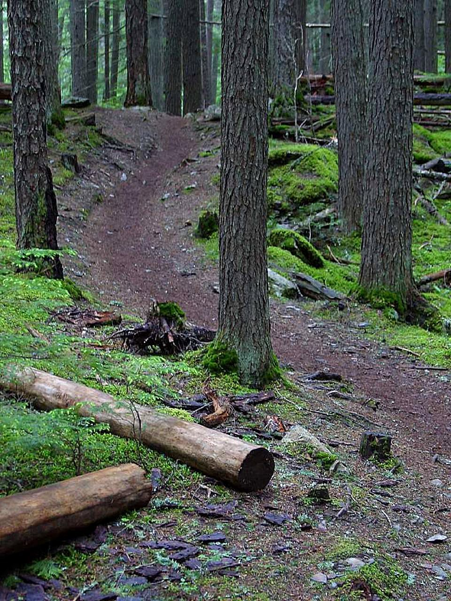
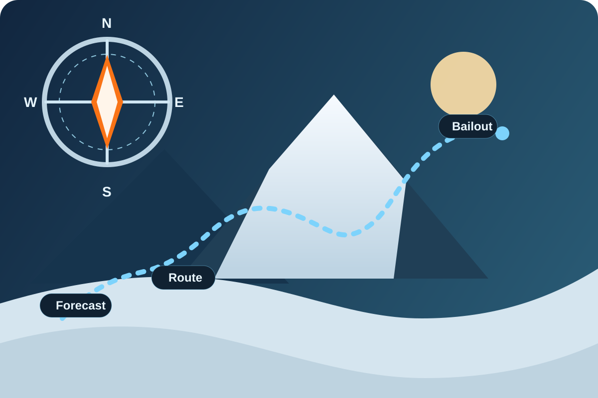

Planning framework
Winter planning is about reducing surprises: conditions, route choices, and decision points. Use this page to standardize how you and your partners prepare.
Core idea: The best rescue plan is avoiding the situation. Plan conservative routes, commit to turn-arounds,
and choose objectives that match the least-experienced partner.
Before you go (ready-to-use checklist)
- Conditions checkWeather, wind, temperatures, precipitation, and recent snowfall or ice formation.
- Route selectionExposure, treeline, bailout points, steepness, and daylight margin.
- TimelineStart time, hard turn-around time, and milestone check-ins.
- Group readinessFitness, skills, gear tiers, and everyone's comfort level.
On-trip decision points
- Layering thresholdStop early before sweating; add or remove layers while it is still easy.
- Traction thresholdSwitch traction before slips start happening.
- Wind and visibility thresholdPre-decide what "too windy" or "too whiteout" means.
- Partner check-insRegular warmth, energy, hands, and feet status updates.
Ready-to-fill trip template
Copy this structure into notes for every trip.
- Objective[Peak or route] | [Start trailhead] | [Distance and elevation]
- Forecast[Temperatures] | [Wind] | [Precipitation] | [Sunset time]
- Turn-around time[Hard stop] | [Milestones and checkpoints]
- Bailouts[Escape routes] | [Shelter options] | [Car shuttle?]
- Group plan[Roles] | [Communication] | [Emergency contact message]

